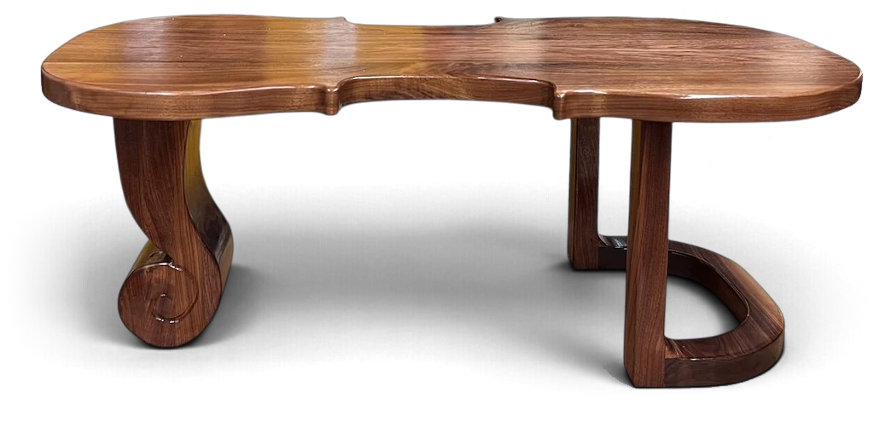

Espressivo
Before college, I dreamed of becoming a professional violinist. But when I got to Stanford, I felt uncertain about my path. In sophomore year, my first woodworking project taught me that there are many ways to create beauty.
This violin-inspired coffee table is a tribute to my first love – music – and a reflection of everything I’ve learned at Stanford. Decorating my new apartment as I begin life after graduation, this table reminds me of who I was, who I am, and who I am still becoming.

Pull up a chair and learn about the process!
Project detailsIn this self-directed 10-week independent study, I set out to learn many woodworking processes and used them to design and build a finished product.
Design Sketching
I sketched and explored over 100 different concepts for the table.
Low-Fidelity Prototyping
I used paper and wood prototypes to test different table sizes and heights.
Woodworking: Cutting
Using my paper prototypes as templates, I traced the shapes onto walnut and began cutting.
- The two pieces of walnut were first glued together. The table top was cut on the bandsaw, as it was too large for the vertical bandsaw.
- The front legs were cut on the vertical bandsaw.
- The back leg was cut from a large block of wood on the vertical bandsaw.
Woodworking: Finishing Each Piece
I finished the legs, back leg, and table top individually.
- Wood glue was used to join the leg pieces together.
- A chisel was used to carve scroll detailing into the back leg.
- Each piece was sanded to a fine grit.
Woodworking: Assembly
Using a large drill bit, I drilled quarter-inch holes in the top of each leg and in the corresponding positions on the underside of the table top. One-inch rods and wood glue joined each leg to the table top.
Finishing
Once the glue had dried, I applied varnish to protect the wood and bring out the natural texture of the walnut. Thank you to my friends who helped with this stage!
Acknowledgements
Special thanks to my professor and mentor, Craig Milroy, for his support, encouragement, and mentorship throughout this project. It was an honor to learn from him, and I can’t wait to continue my studies!